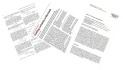

-
Contact Information
Title: Associate Professor
Department : Computer Science
Email: chiangc at sunypoly dot edu (the best way to reach me)
Office: Kunsela Hall C225
Office Hour: MW: 2:00 pm - 4:00 pm | By appointment
Phone: 315-792-7379
-
Short Biography
Currently I work as an associate professor in the department of Computer and Information Science at the State University of New York Polytechnic Institute . My research focuses on Quantum Computation, Quantum Information and Classical (AI, Blockchain) Algorithms. I received my Masters degree in Computer and Information Science from the University of Pennsylvania. I studied quantum algorithms and obtained my Ph.D. in Computer Science from the University of Central Florida [Aug. 2006 - Dec. 2011]. Upon my graduation, I completed two years of postdoctoral training at Université de Sherbrooke in Quebec, Canada [Jan. 2012 - Dec. 2013]. After my postdoctoral training, I gained a valuable teaching experience at the University of Central Missouri [Jan. 2014 - Jul. 2015] then I joined SUNY Poly.
-
Teaching
- Course lecture materials (assignments,solution sketches, presentations) are available on SUNY Poly Blackboard
- Spring 2023
- CS 495 Artificial Intelligence [Syllabus]
- CS 528 Special Topic: Quantum Computation [Syllabus]
-
Past Courses
- Fall 2022
- CS 100 Introduction to Computing Seminar [Syllabus]
- MAT 115 Finite Math [Syllabus]
- CS 538 Special Topic: Noisy Intermediate-Scale Quantum Algorithms [Syllabus]
- Spring 2022
- CS 538 Special Topic: Blockchain: From Cryptography to Optimization [Syllabus] [Ref1: Blockchain and Money] [Ref2: Algorand Developer Docs]
- CS 538 Special Topic: Recurrent and Adversarial Neural Network [Syllabus] [Ref1: Deep Learn] [Ref2: ML Crash Course]
- Fall 2021
- CS 100 Introduction to Computing Seminar [Syllabus] [Reference Material 1]
- CS 528 Quantum Computing [Syllabus]
- Spring 2021
- CS 100 Introduction to Computing Seminar [Syllabus] [Reference Material 1] [Reference Material 2] [Reference Material 3]
- CS 240 Data Structures [Syllabus]
- CS 477 Algorithms [Syllabus] [Reference Material 1] [Reference Material 2]
- Fall 2020
- CS 100 Introduction to Computing Seminar [Syllabus] [Reference Material]
- CS 240 Data Structures [Syllabus]
- CS 538 Approximation Algorithms and Recurrent Neural Network [Syllabus] [Reference Material]
- Spring 2020
- CS 240 Data Structures [Syllabus] [PS1] [PS2] [Exam1] [PS3] [Exam2]
- CS 477 Algorithms [Syllabus] [PS1] [PS2] [Presentation Schedule] [Final Exam]
- Fall 2019
- CS 528 Quantum Computing [Syllabus] [PS 1] [PS 2] [Exam 1] [Presentation Schedule]
- CS 538 Innovative Technologies Seminar [Syllabus]
- MAT 115 Finite Math for Computer Science [Syllabus] [PS 1] [PS 2] [Exam 1] [PS 3] [Exam 2] [PS 4] [Exam 3]
- Spring 2019
- CS 528 Quantum Computing [Syllabus] [PS1+2] [PS3] [PS4] [Assessment Exam]
- MAT 115 Finite Math for Computer Science [Syllabus] [PS1] [PS2] [Exam 1] [PS3] [Exam 2] [PS4] [PS5]
[Exam 3]
[Final]
- CS 240 Data Structures [Syllabus] [PS1] [PS2] [Exam 1] [PS3] [PS4] [PS5] [Exam 3]
- MAT 115 Finite Math for Computer Science [Syllabus] [PS1] [PS2] [Exam 1] [PS3] [PS4] [Exam 2] [PS5] [PS6] [Exam 3] [Final]
- CS 498 Capstone Project
Viktoria Koscinski: Complete Bipartite Graphs with Random k Edges Removed
- CS 528 Quantum Computing [Syllabus] [PS1] [Activity1] [PS2] [Exam 1] [PS3] [Final (take home)]
- MAT 115 Finite Math for Computer Science [Syllabus] [PS1] [PS2] [Exam 1] [PS3] [PS4] [Exam2] [PS5] [PS6] [Exam 3]
- CS 598 Master Project
Sumant Kanala: NYS Fair Events Mobile Application with Client-side Caching
Narendhar Reddy Malgireddy: The Design and Implementation of An E-commerce Site
Sasikiran Divi: Motion Detection
Bhuvana Pranathi Namini: License Plate Number Recognition Using Optical Character Recognizer and Artificial Neural Network - CS 498 Capstone Project
Robert Amador: Multiple Sequences Alignment via diffusion Monte Carlo
- CS 538 Advanced Algorithms: Introduction to Approximation and Randomized Algorithms for Optimization Problems [Syllabus] [PS1] [PS2] [PS3] [Project Guideline] [Final Sample]
- MAT 115 Finite Math for Computer Science [Syllabus] [PS1] [PS2] [PS3] [PS4] [PS5]
- CS 598 Master Project
Vijay Bhargav Koleti: Android Mobile Application: Step Calculator
Amit Sriram Gunnam: An e-Commerce Application Management Using Ruby on Rails
Prudhvi Vahan Raj Ankus: Automobile Tracking Application in Salesforce - CS 591 Independent Study
Niranjan Addanki: Dish Recommendation (NLP)
- MAT 115 Finite Math for Computer Science [Syllabus1] [Syllabus2] [PS1] [PS2] [PS3] [PS4] [PS5] [PS6] [PS7]
- CS 598 Master Project
Rahul: An Inventory Management App in Salesforce
Sai Sandeep: Employee Collaboration Portal with SharePoint - CS 498 Capstone Project
Kofi Shango: Dot Tabs: Google Chrome Extension for Tab and Bookmark Management
- CS 540/495 Artificial Intelligence [Syllabus] (MW: 10 am - 11:50 am) [PS1] [PS2] [PS3] [PS4] [Midterm]
- CS 370 Software Engineering [Syllabus](TR: 10 am - 11:50 am) [PS1] [PS2] [PS3] [PS4] [Project Description] [Project Status Report]
- CS 518 Quantum Computing [Syllabus] [PS1] [PS2] [PS3] [PS4]
- MAT 115 Finite Math for Computer Science [Syllabus] [PS1] [PS2] [PS3] [PS4] [PS5]
- Summer 2015 CS 5600 Advanced Database Systems [4 sessions, Sample Syllabus]
- Spring 2015 CS 4600 Database Theory and Applications [6 sessions, Sample Syllabus ]
- Fall 2014 CS 5900 Advanced Compiler Design and Construction [6 sessions, Sample Syllabus]
- Summer 2014 CS 5600 Advanced Database Systems [4 sessions, Sample Syllabus]
- Summer 2014 Masters Project
- Spring 2014 CS 5300 Advanced Algorithms and Data Structures [2 sessions, Sample Syllabus]
- Spring 2014 CS 4600 Database Theory and Applications [4 sessions, Sample Syllabus]
-
Research
- Quantum algorithms
- Design and analysis | Implementation in the circuit level
- Approximate optimization | Optimization with limited quantum resources
- Quantum computation models and complexity
- Adiabatic Quantum Computation (AQC) | Quantum Walkers (QW) | Resonant Transition (RT) based
- Post Quantum cryptography | Randomness
- Classical algorithms
- Constraint Satisfaction Problems (CSP)
- Blockchain technology | Decentralized system | Optimization
- Summer Undergraduate Research Interns
[2017] Robert Amador Publication 1 Publication 2 Poster | Viktoria Koscinski Publication 1 Poster |
[2018] Aaron Gregory Publication 1 Publication 2 | [2019] Javier Liu Poster | - Visitors : [2017] Dr. Tzu-Chieh Wei | [2018] Dr. Cuncong Zhong
Quantum/Nano Research @ SUNY POLY
- College of Nanoscale Science & Engineering
Publication 
- A Reference Architecture for Activities-as-Asset Distributed Ledger with Secure Private Computation
Chen-Fu Chiang, Ali Tekeoglu, Saumendra Sengupta, Tzu-Chieh Wei, Aaron Gregory, Dilip Kusukuntla
Accepted for International Conference on Information Networking (ICOIN 2023), Jan. 11-14, Bangkok, Thailand (2023). - Optimized Transaction Processing in Lightweight Distributed Ledger Networks for Internet of Things
[link]
Ali Tekeoglu, Chen-Fu Chiang, Saumendra Sengupta, Noor Ahmed, Michael Stein, Dilip Kusukuntla
Accepted for International Conference on Blockchain (ICBC 2022), Dec. 10-14, Honolulu, Hawaii, USA (2022). - Unsupervised Time-Series based Anomaly Detection in ICS/SCADA Networks
[link]
Ali Tekeoglu, Korkut Bekiroglu, Chen-Fu Chiang, Saumendra Sengupta
In 2021 IEEE International Symposium in Networks, Computers and Communications (2021). - Overview: Recent Development and Applications of Reduction and Lackadaisicalness Techniques for Spatial Search Quantum Walk in the Near Term
[link]
[Springer Nature ShareIt]
Chen-Fu Chiang
Quantum Information Processing, 19:364, Springer Nature (2020) - Hankel-based Unsupervised Anomaly Detection
[link]
Korkut Bekiroglu, Ali Tekeoglu, Bruno Andriamanalimanana, Saumendra Sengupta, Chen-Fu Chiang, Jorge Novillo
In 2020 American Control Conference (ACC), pp. 5139-5144. IEEE, (2020). - A Quantum Assisted Secure Client-Centric Polyvalent Blockchain Architecture for Smart Cities
[link]
Chen-Fu Chiang, Sam Sengupta, Ali Tekeoglu, Bruno Andriamanalimanana, Jorge Novillo
2020 IEEE 17th Annual Consumer Communications & Networking Conference (CCNC), Las Vegas, NV, USA, pp. 1-6. (2020) - Efficient Variant Transaction Injection Protocols and Adaptive Policy Optimization for Decentralized Ledger Systems
[link]
Bruno Andriamanalimanana, Chen-Fu Chiang, Jorge Novillo, Sam Sengupta, Ali Tekeoglu
International Journal of Grid and Utility Computing, vol. 11, no. 6, pp. 847 - 856 (2020) - Quantum Walk on Dimensionality Reduced Complete Bipartite Graphs with k Edges Removed [link]
Chen-Fu Chiang and Aaron Gregory
2019 IEEE Globecom Workshops (GC Wkshps), Waikoloa, HI, USA, 2019, pp. 1-6 (2019) - Exploration of Hard to Solve 3-SAT Problems [link]
Robert Amador, Chen-Fu Chiang and Chang-Yu Hsieh
Information Technology in Industry Journal, vol. 7, no.2, pp. 23-32 (2019) - A Hybrid Adaptive Transaction Injection Protocol and Its Optimization for Verification Based Decentralized System
[link]
[MDPI Encyclopedia]
Sam Sengupta, Chen-Fu Chiang, Bruno Andriamanalimanana, Jorge Novillo, Ali Tekeoglu
Future Internet 11, no. 8 : 167, MDPI (2019) - Symmetric Kullback-Leibler Divergence of Softmaxed Distributions for Anomaly Scores
[link]
Bruno Andriamanalimanana, Ali Tekeoglu,Korkut Bekiroglu, Saumendra Sengupta, Chen-Fu Chiang, Michael Reale and Jorge Novillo
IEEE Conference on Communications and Network Security (CNS), Washington DC, DC, USA, pp. 1-6, (2019) - Noise Characterization: Keeping Reduction Based Perturbed Quantum Walk Search Optimal (short version)
[link]
Chen-Fu Chiang and Chang-Yu Hsieh
European Physical Journal (EPJ) Web Conf., 198, 00001 (2019) - Efficient Tough Random Symmetric 3-SAT Generator [link]
Robert Amador, Chen-Fu Chiang and Chang-Yu Hsieh
Proceeding of the 9th International Conference on Computer Science, Engineering and Applications, pp. 41-49, CS & IT-CSCP (2019) - Simulation of Quantum Walks via Hamiltonian Reduction [link]
Aaron Gregory, Chen-Fu Chiang
IEEE Nanotechnology Symposium (ANTS), November 14-15, Albany, NY (2018) - Dimensionality Reduction of the Complete Bipartite Graph with k Edges Removed for Quantum Walks [link]
Viktoria Koscinski, Chen-Fu Chiang
IEEE Nanotechnology Symposium (ANTS), November 14-15, Albany, NY (2018) - Optimal Dimensionality Reduced Quantum Walk and Noise Characterization
[link]
Chen-Fu Chiang
Proceedings of the Future Technologies Conference (FTC) 2018. Advances in Intelligent Systems and Computing, vol 880. pp 914-929, Springer (2018) - Parameterized Pulsed Transaction Injection Computation Model And Performance Optimizer For IOTA-Tango
[link]
Bruno Andriamanalimanana, Chen-Fu Chiang, Jorge Novillo, Sam Sengupta, Ali Tekeoglu
Lecture Notes on Data Engineering and Communication Technology (LNDECT) 24, pp. 74–84, Springer Nature (2018) - Semi-Synchronocity Enabling Protocol and Pulsed Injection Protocol For A Distributed Ledger System
[link]
Bruno Andriamanalimanana, Chen-Fu Chiang, Jorge Novillo, Sam Sengupta, Ali Tekeoglu
Lecture Notes on Data Engineering and Communication Technology (LNDECT) 24, pp. 26–35, Springer Nature (2018) - A Probabilistic Model of Periodic Pulsed Transaction Injection
[link]
Bruno Andriamanalimanana, Chen-Fu Chiang, Jorge Novillo, Sam Sengupta, Ali Tekeoglu
2nd Cyber Security In Networking Conference October 24-26, Paris, France (2018) - Tango: The Beginning - A Semi-Synchronous Iota-Tangle Type Distributed Ledger with Periodic Pulsed Entries
[link]
Bruno Andriamanalimanana, Chen-Fu Chiang, Jorge Novillo, Sam Sengupta, Ali Tekeoglu
2nd Cyber Security In Networking Conference October 24-26, Paris, France (2018) - Optimizing Quantum Walk Search on a Reduced Uniform Complete Multi-Partite Graph
[arxiv]
Chen-Fu Chiang and Chang-Yu Hsieh
Proceeding of the 17th Asian Quantum Information Science Conference, pp.129-131, (2017) - Resonant Transition Based Quantum Computation
[link]
[Springer Nature ShareIt]
Chen-Fu Chiang and Chang-Yu Hsieh
Quantum Information Processing, 16:120, Springer Nature (2017) - Characterizing the Performance Effect of Trials and Rotations in Applications that Use Quantum Phase Estimation
[link]
A. Abhari, S. Patil, C. Chiang, J. Heckey, M. Martonosi and F. Chong
IEEE International Symposium on Workload Characterization (2014) - Selecting Efficient Phase Estimation with Constant-Precision Phase Shift Operators
[link]
[arxiv]
Chen-Fu Chiang
Quantum Information Processing,vol. 13, issue 2, pp. 415-428, Springer (2014) - Quantum Phase Estimation with a Variable Number of Qubits
[link]
[arxiv]
Chen-Fu Chiang
International Journal of Quantum Information, vol.11, no.1, 1350008 (2013) - Hitting Time of Quantum Walks with Perturbation
[link]
[arxiv]
Chen-Fu Chiang and Guillermo Gomez
Quantum Information Processing, vol. 12, issue 1, pp 217-228, Springer (2013) - Scaffold: Quantum Programming Language
[link]
A. Abhari, A. Faruque, M. Dousti, L. Svec, O. Catu, A. Chakrabati, C. Chiang, S. Vanderwilt, J. Black, F. Chong, M. Martonosi, M. Suchara, K. Brown, M. Pedram, T. Brun
Technical Report TR-934-12, Department of Computer Science, Princeton University (2012) - Quantum Phase Estimation with Constant Precision Phase Shift Operators
[link]
[arxiv]
Hamed Ahmadi and Chen-Fu Chiang
Quantum Information and Computation, vol.12, no.9 & 10, pp.0864-0875 (2012) - PhD Dissertation: The Power of Quantum Walk: Insights, Implementation and Applications
[link]
Chen-Fu Chiang
University of Central Florida (Dec. 2011) - Sensitivity of Quantum Walks with Perturbation [arxiv]
Chen-Fu Chiang
Proceedings of the 10th Asian Conference on Quantum Information Science, pp. 209-210, (2010)
- Quantum Algorithm for Preparing Thermal Gibbs States - Detailed Analysis
[link]
[arxiv]
Chen-Fu Chiang and Pawel Wocjan
NATO Science for Peace and Security Series - D: Information and Communication Security, Vol.26, pp. 138-147 (2010)
- Efficient Circuits for Quantum Walks
[link]
[arxiv]
Chen-Fu Chiang, Daniel Nagaj and Pawel Wocjan
Quantum Information and Computation, vol.10 no.5&6, pp.420-434 (2010) - Quantum Algorithm for Approximating Partition Functions
[link]
[arxiv]
Pawel Wocjan, Chen-Fu Chiang, Daniel Nagaj and Anura Abeyesinghe
Phys. Rev. A 80, 022340 (2009)
- Quantum Walk Inspired Dynamic Adiabatic Local Search
[arxiv] (2022)
- Grover Search Inspired Alternating Operator Ansatz of Quantum Approximate Optimization Algorithm for Search Problems
[arxiv] (2022)
- Space-efficient Quantization Method for Reversible Markov Chains
[arxiv] (2022)
Recent Submission / Manuscripts
Talks
- Quantum Computing Applications: Optimization :: Quantum Walk Inspired Dynamic Adiabatic Local
Search and Alternating Operator Ansatz of Quantum Approximate Optimization Algorithm for Search Problems
4th Annual International Quantum Information Science Workshop, 12-14, July, Rome NY, USA (2022) - A Quantum Assisted Secure Client-Centric Polyvalent Blockchain Architecture for Smart Cities
IEEE Consumer Communications and Networking Conference, 10-13 January, Las Vegas, NV, USA (2020) - Quantum Walk on Dimensionality Reduced Complete Bipartite Graphs with k Edges Removed Quantum Communication and Information Technology (QCIT) workshop of IEEE Global Communications Conference, 13 December, Waikoloa, HI, USA (2019)
- Perspective: Recent Development and Applications of Reduction and Lackadaisicalness Techniques for Spatial Search Quantum Walk in the Near Term
Young Researchers Forum on Quantum Information Science, August 14-16, National Tsing Hua University, Taiwan, 2019 - Quantum Walk for the Near Term
Computational Science Initiative, Brookhaven National Lab, March 25, Upton, NY, 2019 - Optimal Dimensionality Reduced Quantum Walk and Noise Characterization
Future Technologies Conference (FTC) November 13-14, Vancouver, BC, Canada, 2018 - Parameterized Pulsed Transaction Injection Computation Model And Performance Optimizer For IOTA-Tango
◾ Griffiss Institute, Rome NY, Jan. 31, 2019
◾ 13th International Conference on P2P, Parallel, Grid, Cloud and Internet Computing, Taiwan, Oct. 27-29, 2018
◾ The 55th NYSETA Fall 2018 Conference, Oct. 18 -19, 2018 - Semi-synchronocity Enabling Protocol and Pulsed Injection Protocol For A Distributed Ledger System
13th International Conference on P2P, Parallel, Grid, Cloud and Internet Computing, Taiwan, Oct. 27-29, 2018 - A Semi-Synchronous Iota-Tangle Type Distributed Ledger with Periodic Pulsed Entries
The 55th NYSETA Fall 2018 Conference, Oct. 18 -19, 2018 - [Invited] Quantum Walk and Its Optimal Search on A Systematic Dimensioality Reduced Uniform Complete Multi-Partite Graph
Institute of Information Science, Academia Sinica, Taiwan, Jun. 6, 2018 - [Invited] Optimizing Quantum Walk Search on a Reduced Uniform Complete Multi-Partite Graph
BIT's 1st Annual Conference of Quantum World 2017, Changsha, Hunan, China, Oct. 16 - 18, 2017 - Quantum Algorithm: Quantum Walk and Spectra Probe to SAT
Provost Lecture Series, SUNY Polytechnic Institute, Apr. 15, 2016 - Applications and Perturbations of Quantum Walk
First Annual Meeting, SIAM Central States Section, Apr. 11 - 12, 2015 - Potential Speed-up for Classical SAT Solver via Quantum Oracle Subroutine
INTRIQ Student Conference, Jan. 10 - 11, 2013 - Quantum Phase Estimation with an Arbitrary Number of Qubits
INTRIQ, Lac Brome, Quebec, Canada, Sept. 10 - 11, 2012 - Hitting Time of Quantum Walks with Perturbation
Department of Physics, University of Sherbrooke, Canada, May 15, 2012 - Quantum Phase Estimation with Constant Precision Phase Shift Operators
Institute for Quantum Computing, Canada, Apr., 12, 2011 - Quantum Algorithms
EPIQ, University of Sherbrooke, Canada, Nov. 30, 2010 - Amplitude-Amplification-Based Approach for Preparing Thermal Gibbs States
Centre for Quantum Technologies, Singapore, Sept. 13, 2010 - Quantum Algorithm for Preparing Thermal Gibbs States - Detailed Analysis
Institute for Quantum Computing, Canada, May 04, 2010 - A Quantum Algorithm for Approximating Partition Functions
Fields Institute, Canada, Aug. 22, 2009 - Quantum Speed-up of Estimating Partition Functions
CREOL, University of Central Florida, USA, Mar. 30, 2009
Posters
- A Reference Architecture for Activities-as-Asset Distributed Ledger with Secure Private Computation
International Conference on Information Networking (ICOIN 2023), Jan. 11-14, Bangkok, Thailand (2023). - Keeping Continuous Time Quanutm Walk Search Optimal on Dimensionality Reduced Complete Bipartite Graphs with Random k Edges Removed
The 19th Asian Quantum Information Science Conference (AQIS), August 19-23, Seoul, Korea (2019) - Noise Characterization: Keeping Reduction Based Perturbed Quantum Walk Search Optimal (short version)
Quantum Technology International Conference (QTech 2018), Paris, France, September 5-7, 2018 - Reduction of the Complete Bipartite Graph with K-edge Removal for Quantum Walk
Quantum Technology International Conference (QTech 2018), Paris, France, September 5-7, 2018 - Optimizing Quantum Walk Search on a Reduced Uniform Complete Multi-Partite Graph
◾ 17th Asian Quantum Information Science Conference (AQIS 2017), Singapore, Sept. 4 - 8, 2017.
◾ 3rd International Conference for Young Quantum Information Scientists, Max Planck Institute for the Science of Light, Erlangen, Germany, Oct. 3 - 6, 2017 - Resonant Transition Based Quantum Computation
19th Annual SQuInT Workshop, Baton Rouge, LA, USA, Feb. 23 - 25, 2017 - Cost Function For Selecting Efficient Inverse QFT
INTRIQ, Bromont, Quebec, Canada, April 17 - 18, 2013 - An Implementation of a Quantum Algorithm for the Triangle Finding Problem
Quantum Computer Science Program PI Meeting, Princeton, NJ, USA, July 16 - 17, 2012 - Sensitivity of Quantum Walks with Perturbation
10th Asian Conference on Quantum Information Science (AQIS 2010), Japan, Aug. 29, 2010